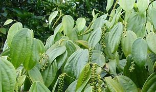

Latthe Education Society's Acharya Deshabhushan Ayurvedic Medical College And Hospital Bedkihal-Shamanewadi, 591214
Department of Dravyaguna Vigyana

Basonym of Drug
Maricha
Main Synonym
Vellaja
Krushna
Ushana
Dharmapatana
Regional Name
Bengali: Gol Mirch
Gujarati: Kala Mari, Tikha
Hindi: Kali Mirch
Kannada: Ollemenasu
Tamil: Nallumulku
Telugu: Shavyamu, Marichamu
English: Black Pepper
Botanical Name
Piper nigrum
Family
Piperaceae
External Morphology
Climbing perennial shrub
Useful Parts
Fruit
Important Phytoconstituent
Piperine
Piperethine
Piperolein
Carotene
Pipercide
Citronellol
Dihydrocarveol
Beta-caryophyllene
Beta-alanine
Rasa Panchak
Rasa: Katu
Guna: Laghu, Tikshna
Virya: Ushna
Vipaka: Katu
Action
Vatakaphahara
Therapeutic Indication
Deepen (Appetizer)
Pachana (Digestive)
Kasahara (Anti-cough)
Swasahara (Anti-asthmatic)
Krimighna (Anti-helminthic)
Shoolahara (Pain reliever)
Lekhna (Scraping of excessive fat)
Therapeutic Uses
Swasa:
Powder with honey is given for licking in asthma and excessive cough.
Aruchi:
Powder with rock salt and buttermilk before the meal is beneficial for anorexia.
Dantashoola:
Gargle with the decoction of Maricha is beneficial in toothache.
Dose
Powder - 0.5-1 gm
Formulations
Marichadhya Taila
Trikatu Churna
Maham Marichyadi Taila
Agnitundi Vati
Marichyadi Churna
Adverse Effect
Not Known